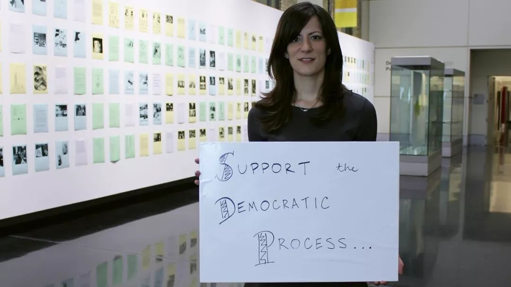

收录于合集
#民主与民主化 34 个
#比较政治学 121 个
文献来源： Alexandra Cirone, “When Democracy Is Broken， Roll the Dice: Lotteries in Political Selection” Newsletter of the Organized Section in Comparative Politics of the American Political Science Association, 29(2), Fall 2019, pp.26-33.
作者简介： Alexandra Cirone，康奈尔大学政府系助理教授。

一、文章简介
从许多角度看来，民主都处于危机之中。政治被认为是由精英驱动的——尤其是当选的官员愈发富有、身处高位甚至腐败的时候。系统性的不平等与极化共同引起了人们的担忧：社会中广大人民并未被代表，反是被拒于政治过程之外。选民感到自己似乎无法对政策施加任何影响，且对政府和本国同胞的信任水平也很低——世界范围内有26个国家的选民倾向于认为当选的官员并不在乎普通人的想法（皮尤中心，2019）。借着这些问题，民粹主义政党正在以“还政于民”的倡议在选举中取得成功，全民公投等直接民主举措的使用也在世界范围内显著增加（有时会产生意料之外的结果，如英国脱欧或2016年哥伦比亚和平协议）。
是否有一种制度改革可以改进我们选拔政治官员的方式？抽签（Lotteries）被认为是一种解决方案：完全随机地选拔政治官员或候选人，或将抽签纳入政治选拔的制度性规则。有学者提出抽签是改革议会政治的一种方式（Dowlen,2009;Gastil & Wright,2019）；如英国上议院（Barnet&Carty,2009）或欧洲议会的委员会选举（Buchstein&Hein,2009）。抽签也被更多地用于不同形式的协商民主（Van Reybrouck,2016），并成为加拿大、荷兰、爱尔兰、英国、澳大利亚、美国等国家政策辩论的一部分。
在政治学和法学中，长期存在着分析抽签在政治选拔中的益处的传统 （Manin 1997; Elster 1989; Engelstad 1989; Dowlen 2009; Duxbury 1999; Ober 1993 等）。多数读者可能对抽签——即个人被随机选拔成为政府官员——这一选拔方式非常熟悉。在过去，抽签曾是雅典以及中世纪和文艺复兴时期意大利北部城市国家进行治理的核心部分；在今天，抽签在当代的应用可以在法庭陪审团的选拔和越来越多的公民集会中找到痕迹。除了简单的抽签之外，将随机成分加入政治选拔也是可行的，这被称作基于抽签的程序（Lottery- based procedure）。例如，先用抽签的方式选出一群人，再由他们选举或任命某人进入政府。尽管这不是纯粹的抽签，但也保留了抽签的一些优点。事实证明一些欧洲国家在19世纪的民主化过程中正是采用了这样的规则。
为什么要进行政治抽签？最主要的好处就是克服选举的“贵族效应”——即富有的公民更有能力去积累当选所需的声望和公共演说技巧，并能够运用个人和国家资源使自己继续掌握权力（Manin,1997）。照理说，抽签能保证更加公平地获取政治职位。虽然抽签可能不会产生能够完全代表全体公民的执政团体，但每一个人都有同样的机会被选中。即使政治仍然被精英所控制，抽签相比于选举而言，也能够保证更多的声音被代表（Stone,2009）。抽签还能够通过引入不确定性来预防腐败，任何随机因素都会使精英难以进行合作或过度影响选拔过程。我们对基于抽签的程序也有同样的理论预期（Cirone&van Coppenolle,2019）。
另外，抽签对于社会科学家而言也是方便的工具，因为他们能够轻易地以此进行因果推断。政治职位的随机分配为我们提供了一个理想的实验，以用来估计职位对政策输出或政治生涯的影响。即便是基于抽签的程序也能够帮助识别，因为部分的抽签能够被运用到准实验的设计之中（Karpowitz & Mendelberg,2011；Cirone &van Coppenolle,2018）。但是关于抽奖在政治选拔中的作用，我们又了解多少呢？
正如本文将要呈现的，我们可以依靠过去和当下的既有研究来获得对抽签作用的更好理解。首先，作者使用微观历史数据和历史政治经济学方法对“以抽签为基础的规则如何影响政策结果”这一问题的研究作为重点，回顾了抽签在历史中一系列著名的应用。随后我讨论了对随机分配的审议团体所构成的公民集会的新近研究，并用问卷调查法和其他数据分析其效用。最后，本文将过去和当下的研究联系起来，并讨论了我们能同时从两者中学到些什么。
二、 过去的政治抽签
早期的制度创设者认识到抽奖的价值，并在治理中试着运用基于抽签的规则。这里本文将讨论两个著名案例：佛罗伦萨共和国和法兰西第三共和国。在这两个案例中都存在一种担忧，即富有且有影响力的精英会以牺牲少数人（公民或政治团体）的利益为代价控制政治过程。在政治制度快速变迁的高度不稳定时期，抽签也因其反腐败的效果被使用：基于抽签的程序在此能够扮演“消毒”的角色（Stone,2009）。
在十四世纪的佛罗伦萨共和国，政治被精英家族的网络所控制，他们对政治经济体系有着巨大影响。Abramson（2019）探究了在1382-1434年间一种基于抽签的选拔规则。这是一种在制度化寡头政治的情境中，基于职业公会身份的有限选举权。首长会议（The Priorate，或说执行机构），以及其领导人均经由结合选举和抽签特点的规则选出。具备资格的候选人团体首先在一个专门设计的委员会中被投票，而后从当选的这些候选人中（以职业公会加权配额）再随机抽取城市行政人员。这一研究也考虑到了领导人偏好对政策的影响，研究表明，领导人的经济利益会决定当时的货币定价。
也许更重要的是，这一规则事实上是随机且未腐败的，并成功地保证了代表的多样性。在佛罗伦萨，把基于抽签的程序和行政官员经常性的重新选举结合起来，不仅意味着公会的高阶和低阶成员更加公平地获得权力的机会得到保障，而且也防止少数人对权力长期的获取与巩固。这在当代政治理论中也被人熟知——正如McCormick（2010）提到的那样，马基雅维里倡导基于抽签的选拔规则，以保证政府中更广泛的社会参与；圭恰迪尼也称，即便仅在选举过程中加入随机性因素（而未必需要纯粹的抽签），也能够帮助稀释精英偏误。在这里，佛罗伦萨的案例同样告诉我们随机选举官员有着一种教育机制：马基雅维里认为普通市民在任职之后会更加熟悉政治（Machiavelli,of D I.47）。
法兰西第三共和国（1870-1940）同样运用了基于抽签的程序，用来选出众议院中握有实权的预算委员会。Cirone&van Coppenolle （2019）的研究提出，这种选举规则的策略性使用，是为了防止在动荡的民主化过程中产生的早期制度被政党派系和自私的政治精英所俘获。这样一来，议会就被分成了十一个随机分配的小组，每一小组再选举产生三个委员会成员。尽管这并非纯粹的抽签，在选举过程的第一阶段被随机分配的小组也能够使竞争更加公平。这一制度的结果是许多年轻且有政治能力的中产阶级代表代替了有影响力的精英。另外，一旦政党变得强大，他们就取消了基于抽签的程序，使精英再次占据关键位置。这一结果也会转移至其他国家：法国1789年、丹麦1848年的宪法委员会都应用了基于抽签的程序，这一选举规则也再次强调政治技能而非精英地位（Cirone&van Coppenolle，2019）。因此，抽签的创新性使用能够更加广泛地帮助政治家参与决策过程。
三、今天的政治抽签
今天，抽签被应用于“协商民主”的方案中，以期在动态的决策形式下涵盖更多公民群体（Gastil,2018）。在世界各地，这些方案被采纳的数量令人吃惊，对此感兴趣的读者可以访问网站www.participedia.net的公众参与数据库。一个例子就是公民大会：它们由随机选出的公民群体构成，且往往基于社会人口构成进行分层，履行讨论问题并形成建议的职责。大会成员接收平衡的信息，深入研究问题，而后进行一系列包含讨论和政策制定内容的会议。讨论的主题可以是特定问题，甚至也可以是关键的制度改革，如宪法修正或选举法修改。
在此，抽签选拔的好处十分清晰：参与者包含了更广泛社会群体的成员，若不是抽签选举他们可能并不会有这个机会。关于协商民主的研究表明，抽签选举能够帮助促进社会各个层次公民的相互了解，能够消解极化的消极影响，能够帮助公民在错误信息和政治操纵中保持方向（Druzek et.al,2019）。此外，协商活动的参与者更可能想要再次参与，这或许能够对其他民主参与产生溢出效应（Gastil et.al,2010; Gastil,2018）。随机选拔还能确保这种政治创新下的参与避免（像一些开放公共参与的事件一样）受到狭隘和组织化利益的掌控。
学者们仍然在探究公民大会的实验特性，在不同的语境和制度设计下，参与对参与者和政策的影响不尽相同。然而，越来越多的证据表明协商有着积极的影响。作为“我们公民”（We the Citizens）2011年在爱尔兰进行的公民大会试点，以及一个独立的国家民主参与倡议，学者们设计了一个准实验，试图将信息的影响从协商和观念变化的影响中分离出来（O’Malley & Farrell & Suiter,2019）。一组参与者仅收到关于讨论问题信息的材料，另一组参与者则在收到信息材料的同时，获得了进行组内讨论的机会。一如预期，作者发现观念变化在讨论的过程中更为明显。
公民大会背后的推动力源于现代政治或许已经破碎这一观念，且常与对直接民主的倡议（如全民公投）共同提出。爱尔兰是二者同时应用的一个范例。爱尔兰召集了两个随机选出的公民大会，先是2012-2014年的制宪会议，而后是2016-2018年的“爱尔兰公民大会”。大会成员被要求讨论一系列的国家政策问题，值得注意的是，两个大会都在关于堕胎和婚姻平等的宪法修订中扮演了重要的建议角色（Farrell,2019）。由于两个大会都在召开全民公投中扮演了关键角色，并将协商民主和直接民主联系起来，爱尔兰的案例显得十分重要。全民公投由于误导和偏差信息而严重受挫，公民大会则有着减轻这些缺陷并在投票之前改善公投质量的潜力。
英国同样在最近开始进行公民大会的实验，以处理众所周知的脱欧问题。在2017年，来自英国和伦敦大学学院（UCL）宪法小组的学者团队协助进行了脱欧问题公民大会。大会将50名随机选出的公民（同样由人口统计特征和欧盟公投选择进行分层）带到一起，围绕脱欧的后果进行为期两周的讨论。大会讨论的结果由概述大会主体观点的报告呈现，但学者仍然采取调查的方式跟踪这一过程前后的态度变化（Renwick et al,2019）。大会成员在欧盟贸易和移民问题上的观点发生了些许转变，然而更重要的是，这些成员对问题的理解（以自我感知和协调人为测量方式）随着时间的推移而有所增进。英国其他地区也在开展类似的试点，以进一步探索如何将此类咨询纳入决策过程（Prosser et al, 2019）。
今天，围绕任何公民大会或基于抽签程序的相似倡议，都有着很大的研究空间。有效的实验要求高水平的研究控制——在这里，研究者可以探索内置的随机性（built-in randomization），进而在研究公民大会对公民的影响，及其对民主政策和实践的提升潜力时积极创新。研究团队还可以实验性地操作实验设计的特性——从小组成员到协调人的类型再到审议活动——这些都大大增加了我们采取基于证据的方法发展这一民主制度研究的能力（Karpowitz &Mendelberg 2011）。
**** 四、 联系过去与现在
事实上，时间的推移和案例间的差异都会使政治选举的特有性质有所变化：在历史上佛罗伦萨共和国和2016年爱尔兰关于堕胎问题的公民大会中，基于抽签的程序背后的基本原理被大量政治、社会、经济的差异性条件所左右。另外，包括政治选举问题的研究同样包含在个体层面的分析：从被选中的政治家的个性到他们在位时的行为。这通常要求更加细致的数据和对每次应用微观基础的历史分析，或许这会导致个案基础上的案例解释。然而，抛开案例来说，对抽签的应用也会产生有普遍性的激励与行为。例如，我们知道抽签动摇着精英的合作和俘获能力，即使权力精英的定义和种类从古至今产生了变化，这种普遍化的预测应该能够在不同研究中得以保留。目前，比较研究的方法有着显而易见的好处。
更进一步讲，抽签在历史上议会中的应用与其在现代公民大会中的应用之间的差异，则蕴含着重要的政治意义。比如，近期的研究发现，在随机分配小组中的协商能够帮助公民形成温和的观念，减轻极化的态度。但是，我们是否应该对这些结果出现在现代的立法行为中抱有期待呢?
虽然立法主体的行为在一定程度上能够在实验和焦点小组中重复呈现，但现实世界制度中的风险要更高。在对1848年丹麦制宪会议的研究中，作者关注了这样一个事实：大会成员分配到随机的小组中以讨论宪法相关的政策问题（Cirone & van Coppenolle,2019）。这样做的结果是，政策协商小组的构成（例如，在一个组中保守派和贵族的数量）是外生的。利用1848-1849年间，基于立法者传记、个人经历和点名投票的微观数据，我们可以关注这种构成，看其如何影响投票行为（包括成员的理想点和跟随政党投票的可能性）。在制宪会议期间，我们没有发现小组成员的构成对投票行为在统计上有显著影响，政策决定的主要驱动因素仍然是党派联盟。尽管这只是一个单独的案例，但其也许表明，随机分配小组的这种调和作用在地方和建议性机构的情境中会更大。但只有探究抽签在议会中应用的历史案例，我们才可能更好地识别当下抽签在公民大会中应用的条件范围。
五、结论
抽签过程中的机会元素总能释放我们的想象力。但从政策视角来看，政治抽签如今各种形式的提案都是为了弥补民主的赤字。基于抽签来选举高级政治领导人的提议已经在英国、法国以及作为超国家体系的欧盟被提出。公民大会在许多国家的地方和中央（全国）层面得以实现。
然而，基于抽签的政治选举也并非万能钥匙，这些程序有着一系列的缺陷。第一，无论采取何种选举规则，精英可能仍然会更多地介入政治；抽签也无法使所有的民主机构都避免党派和腐败的压力。第二，专家与职业政客投入政治对政治本身是有益的，随机选择固有的不确定性可能会使潜在的候选人失去训练自己知识和经验的动力。或者，如何在选出的公民中进行增减，将是基于抽签的选举一直面要临的问题。随机选出的官员也缺乏民主合法性，这可能有损于他们胜任自己工作的能力。第三，即使以临时公民大会的形式实行抽签制，也对时间、资源和悉心设计的程序有所要求。抽签制也很难从内部实现，特别是在政府和政党的顶层，或其他团体已经为现有选举体系付出太大成本的地方。因此要回到古代纯粹的抽签似乎不太可能。
尽管如此，抽签在政治选拔中的应用也有着特定的前景，以帮助将更多的公民纳入民主过程。通过对过去独特制度实验的审视，以及对近期基于抽签选举创制的借鉴，我们对现行民主制的缺陷进行修补是完全可能的。
译文：殷 昊 审校：吴温泉 编辑：康张城
【政文观止Poliview】系头条号签约作者